Our Services
Petro Chemicals
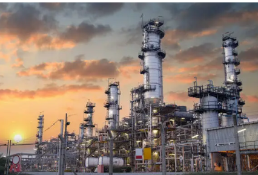Modernization program of the plant includes reconstruction of the pyrolysis unit to increase its capacity by 1.5 times, or by 450 Mt of ethylene per year; constructing the Kazakhstan's biggest low-density polyethylene production facility with the capacity of 345 Mt per year; establishing the country’s second biggest polypropylene production with the annual output of 250 Mt of a wide range of branded polymers; building a railway overpass for draining and loading liquefied hydrocarbon gases with the annual capacity of 300 Mt, which will reduce the crude material cost....
Pipe Line
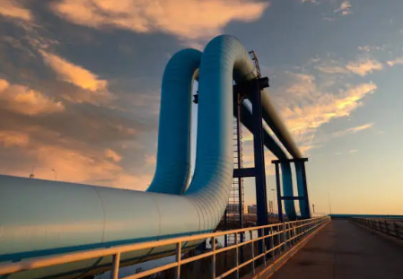Pipelines are essential for transporting oil, gas, and refined products efficiently and safely over long distances. Made from durable materials like steel, they are designed to withstand high pressure and environmental conditions, often running underground or underwater. Modern pipelines feature advanced monitoring systems to detect leaks and ensure safe operations, making them a reliable transportation method. They are also more energy-efficient and environmentally friendly compared to trucks or ships. In **Kazakhstan**, pipelines like the **Caspian Pipeline Consortium (CPC)** and the **Kazakhstan-China Pipeline** are vital for exporting the country’s oil and gas, linking local production to international markets and supporting the national economy.....
Exploration And Drilling
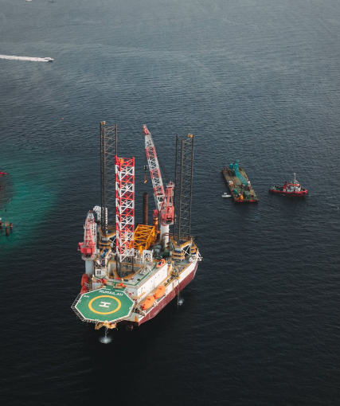Exploration and drilling are key processes in the oil and gas industry to locate and extract hydrocarbons from beneath the Earth’s surface. **Exploration** involves identifying potential oil and gas reserves using techniques like seismic surveys, geological studies, and satellite imagery. Once a promising location is found, exploration wells are drilled to confirm the presence of hydrocarbons. **Drilling** is the process of creating a wellbore to access the oil or gas reservoirs. This involves using advanced drilling rigs and techniques such as directional drilling to reach targets deep underground or offshore. After successful drilling, wells are completed and production begins, allowing for the extraction of oil and gas for processing and distribution. Together, exploration and drilling are crucial steps in unlocking new energy resources, ensuring a steady supply of oil and gas for global consumption. .....
Products
Aviation Jet Fuel A1
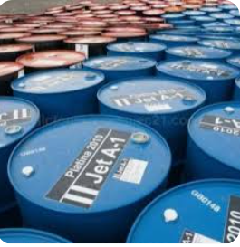Aviation Jet Fuel A1 is a high-quality, kerosene-based fuel for jet engines, meeting international standards. It’s clear to pale yellow, has a low freezing point, and includes additives for icing, corrosion, and oxidation prevention, ensuring efficient combustion and safety in high-altitude flight....
D2 Diesel Gas Oil
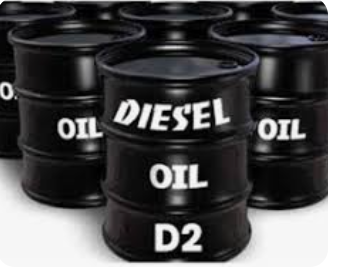D2 Diesel Gas Oil is a type of diesel fuel commonly used in vehicles and machinery. It’s a middle distillate with a high energy content, providing efficient combustion and power. Typically, it has low sulfur content, helping to reduce emissions and meet environmental regulations. D2 is widely used in both transportation and industrial applications for its reliability and performance....
D6 Bunker Fuel Oil
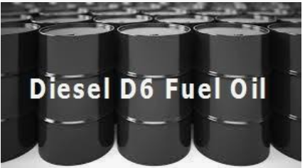D6 Bunker Fuel Oil is a heavy, viscous fuel used primarily in marine engines and power plants. It’s a residual fuel derived from the refining process, with a high energy content and lower cost compared to lighter fuels. D6 has a higher sulfur content, which can contribute to emissions, but it remains popular for its economical use in large-scale operations and ships....
EN 590 Diesel
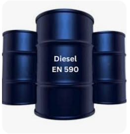EN 590 Diesel is a standardized diesel fuel specified by the European norm, designed for use in diesel engines. It has a lower sulfur content compared to non-standard fuels, meeting strict environmental regulations to reduce emissions. EN 590 Diesel is formulated for efficient combustion and optimal engine performance, making it suitable for vehicles and machinery across Europe....
Fuel Oil
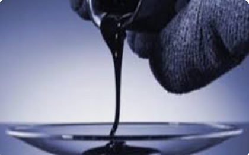Fuel oil is a broad category of liquid fuels used in various heating and industrial applications. It’s derived from crude oil through refining and comes in several grades, including light, intermediate, and heavy fuel oils. Fuel oil is commonly used for heating buildings, powering industrial machinery, and as bunker fuel for ships. Its properties, such as viscosity and sulfur content, vary depending on its grade and intended use....
Crude Oil
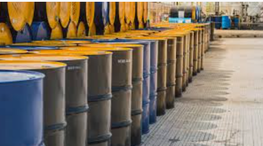Crude oil is a naturally occurring, unrefined petroleum product composed of a mix of hydrocarbons and other organic compounds. It’s extracted from underground reservoirs through drilling and is the raw material for producing refined products like gasoline, diesel, and jet fuel. Crude oil varies in composition and quality, influencing its value and the types of products that can be refined from it. It’s a major energy source and a key driver in the global economy....
mazut
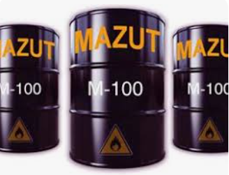Mazut is a heavy, residual fuel oil derived from crude oil refining, often used in industrial heating and power generation. It has a high viscosity and density, and its sulfur content can be quite high, which may impact emissions. Mazut is typically used in large-scale boilers, furnaces, and marine engines due to its lower cost compared to lighter fuels, but its use is subject to stricter environmental regulations due to its potential pollutants....
Liquefied Petroleum Gas (LPG)
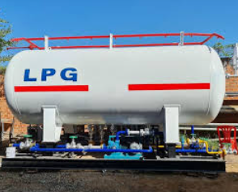Liquefied Petroleum Gas (LPG) is a mixture of propane and butane, stored in liquid form under moderate pressure. It’s used as a fuel for heating, cooking, and powering vehicles. LPG is favored for its clean-burning properties, efficiency, and versatility, making it a popular choice for both residential and industrial applications. It’s easily transported and stored in pressurized tanks, making it accessible in areas without natural gas infrastructure....
Liquefied Natural Gas (LNG)
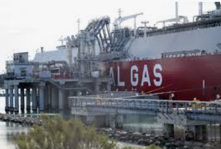Liquefied Natural Gas (LNG) is natural gas that has been cooled to a liquid state at approximately -162°C (-260°F) for ease of storage and transportation. It primarily consists of methane and is used as a cleaner alternative to other fossil fuels for power generation, heating, and as a transportation fuel. LNG is stored in cryogenic tanks and can be transported over long distances by specialized ships. When regasified, it returns to a gaseous state for use in various applications....
Petroleum Coke
Petroleum coke, often referred to as petcoke, is a byproduct of the oil refining process, specifically from the coking process. It’s a solid, carbon-rich material used primarily as a fuel in power plants and in the production of aluminum, steel, and cement. Petcoke is high in carbon and energy content but can have high sulfur and metal content, which may lead to environmental concerns. Its uses are largely industrial, and it’s valued for its high calorific value and cost-effectiveness....
Bitumen/Asphalt
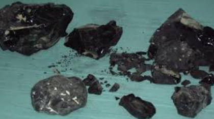Details Bitumen and asphalt are closely related but distinct materials used in construction and paving. - **Bitumen** is a black, sticky substance derived from the distillation of crude oil. It's used primarily as a binder in asphalt and in waterproofing applications. Bitumen is known for its adhesive and waterproof properties, making it ideal for road construction and roofing. - **Asphalt** refers to a mixture that includes bitumen as the binder combined with aggregates like sand, gravel, or crushed stone. This mixture is used for paving roads, driveways, and other surfaces. Asphalt is valued for its durability and smooth surface, which is ideal for vehicular traffic and various structural applications. Together, bitumen and asphalt play crucial roles in infrastructure, providing both the binding and structural elements needed for durable road surfaces and other construction projects....
Naphtha
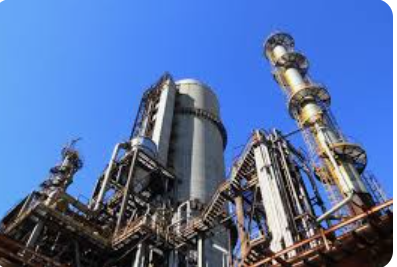Naphtha is a volatile, flammable liquid hydrocarbon mixture derived from crude oil or natural gas. It serves as a key feedstock in the petrochemical industry for producing chemicals like ethylene and propylene. Naphtha is also used as a solvent in various industrial processes, in gasoline blending, and as a lighter fluid. Its properties, such as volatility and flammability, make it versatile for a range of applications, but also require careful handling....
All of this products are available Note:It is imperative to contact us if there is any product you need that is not yet on our website
All of this products are available. All of this products are available Note:It is imperative to contact us if there is any product you need that is not yet on our website....
Our Environmental Commitment
**Our Environmental Commitment** Since our founding in 2001, Vortex Petroleum Group has been committed to operating in a way that prioritizes environmental responsibility alongside energy production. As a leading player in the oil and gas industry, we recognize the importance of minimizing the environmental impact of our operations and continually strive to adopt sustainable practices that ensure the protection of natural ecosystems, communities, and future generations.
**Reducing Emissions and Carbon Footprintt: At Vortex Petroleum Group, we are deeply committed to reducing our carbon footprint. Over the past two decades, we have invested heavily in technologies that reduce greenhouse gas emissions from our exploration, drilling, and production processes. By utilizing advanced carbon capture systems and investing in renewable energy offsets, we ensure that our operations meet and exceed global environmental standards. Our goal is to contribute to a low-carbon future, actively working towards sustainability in energy production.
**Sustainable Exploration and Drilling** We take a proactive approach to environmentally sustainable exploration and drilling practices. Vortex Petroleum Group uses cutting-edge technology to minimize land disruption and reduce the environmental footprint of our drilling operations. We apply advanced methods such as directional drilling and seismic surveys to reduce the number of wells needed and minimize surface impact. This means we access resources with precision, reducing unnecessary environmental disruption and conserving natural habitats.
**Water Conservation and Management** Water is a critical resource, and we take its protection seriously. We have implemented comprehensive water management practices to ensure that water used in our operations is responsibly sourced, treated, and reused wherever possible. Our wastewater treatment and recycling processes aim to minimize water wastage, safeguard local water supplies, and prevent contamination of surrounding ecosystems.
**Biodiversity Protection** At Vortex Petroleum Group, we understand the importance of preserving biodiversity in the areas where we operate. Our environmental impact assessments include biodiversity studies to identify sensitive species and habitats, allowing us to adapt our projects to mitigate harm to local flora and fauna. Through habitat restoration projects and responsible land management practices, we ensure that our activities support the long-term health of ecosystems.
**Community Engagement and Transparency** We believe that environmental responsibility goes hand-in-hand with open communication and collaboration with the communities in which we operate. We engage with local stakeholders, government bodies, and environmental groups to ensure our practices align with regional environmental goals and community values. By maintaining transparency in our environmental practices and reporting, Vortex Petroleum Group remains accountable to our stakeholders and works to foster trust and cooperation.
**Investing in Renewable Energy** As part of our commitment to a sustainable energy future, we have been investing in renewable energy projects that complement our traditional oil and gas operations. By exploring opportunities in solar, wind, and bioenergy, Vortex Petroleum Group is taking steps towards diversifying our energy portfolio and supporting the global transition to cleaner energy sources.
**Continuous Improvement** Environmental responsibility is an ongoing journey. At Vortex Petroleum Group, we continuously seek out new technologies and methods to reduce our environmental impact. We are dedicated to improving the efficiency of our operations, reducing waste, and minimizing emissions, while maintaining the highest standards of safety and operational excellence.
**Our Vision for the Future** Vortex Petroleum Group’s environmental commitment is deeply rooted in our long-term vision. We aim to be a leader not only in energy production but also in sustainable practices that protect the planet. By balancing energy needs with environmental care, we are helping to shape a cleaner, more sustainable future for generations to come.
VORTEX PETROLEUM GROUP
**At Vortex Petroleum Group, we are dedicated to providing exceptional service Since 2001, Vortex Petroleum Group has been unwavering in our dedication to environmental stewardship, and we will continue to evolve our practices to meet the growing challenges of climate change and environmental conservation....
Contact Us

Contact us at Vortex Petroleum Group for more information.
Email: info@vortexpetroleum.com
Phone: +123 456 7890
Address: 1234 Petroleum Avenue, Energy City